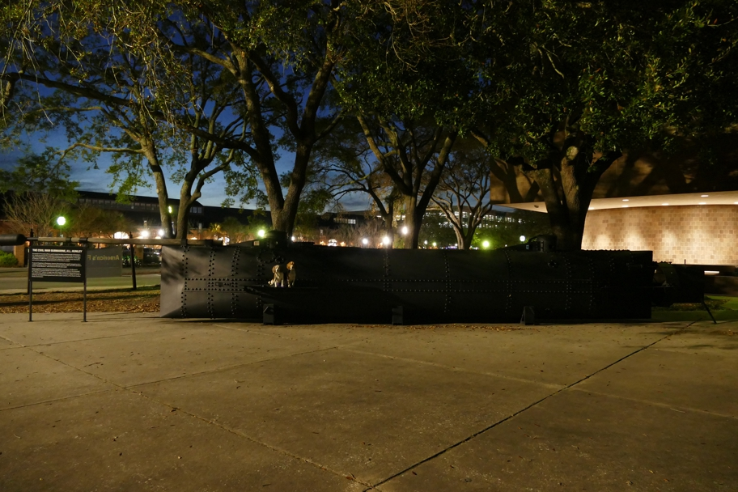

The Confederate submarine the H.L. Hunley was the first submarine to sink an enemy ship. Unfortunately it sank too, so this model was made for the Charleston Museum. The actual vessel was raised in 2000.
Charleston Halley Beagle South Carolina Wallace Beagle